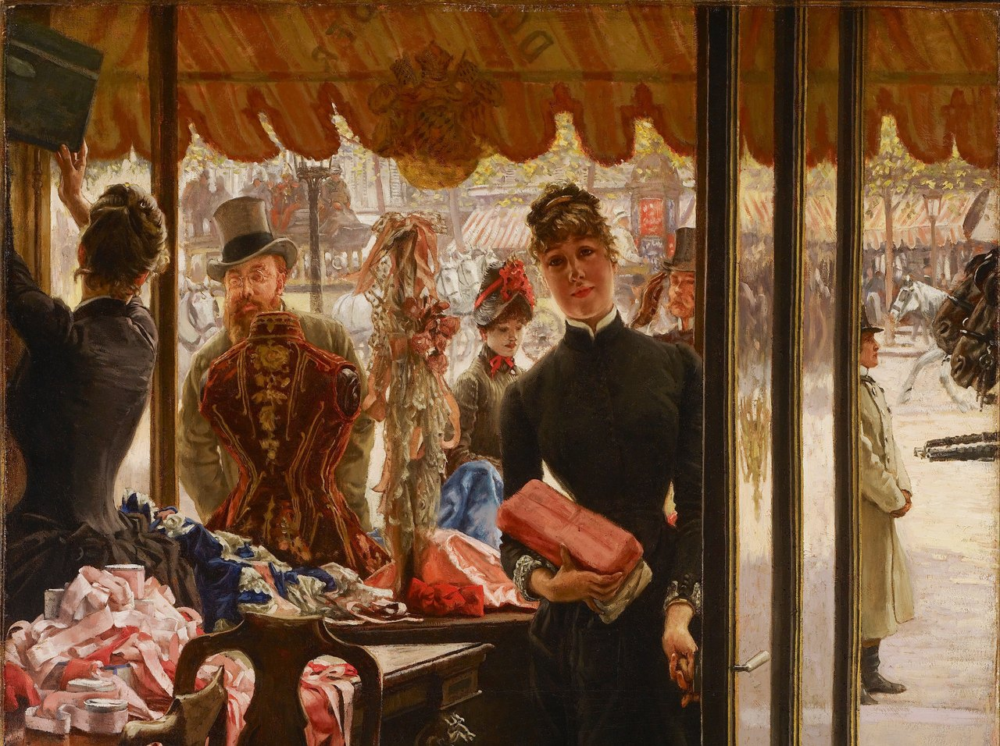
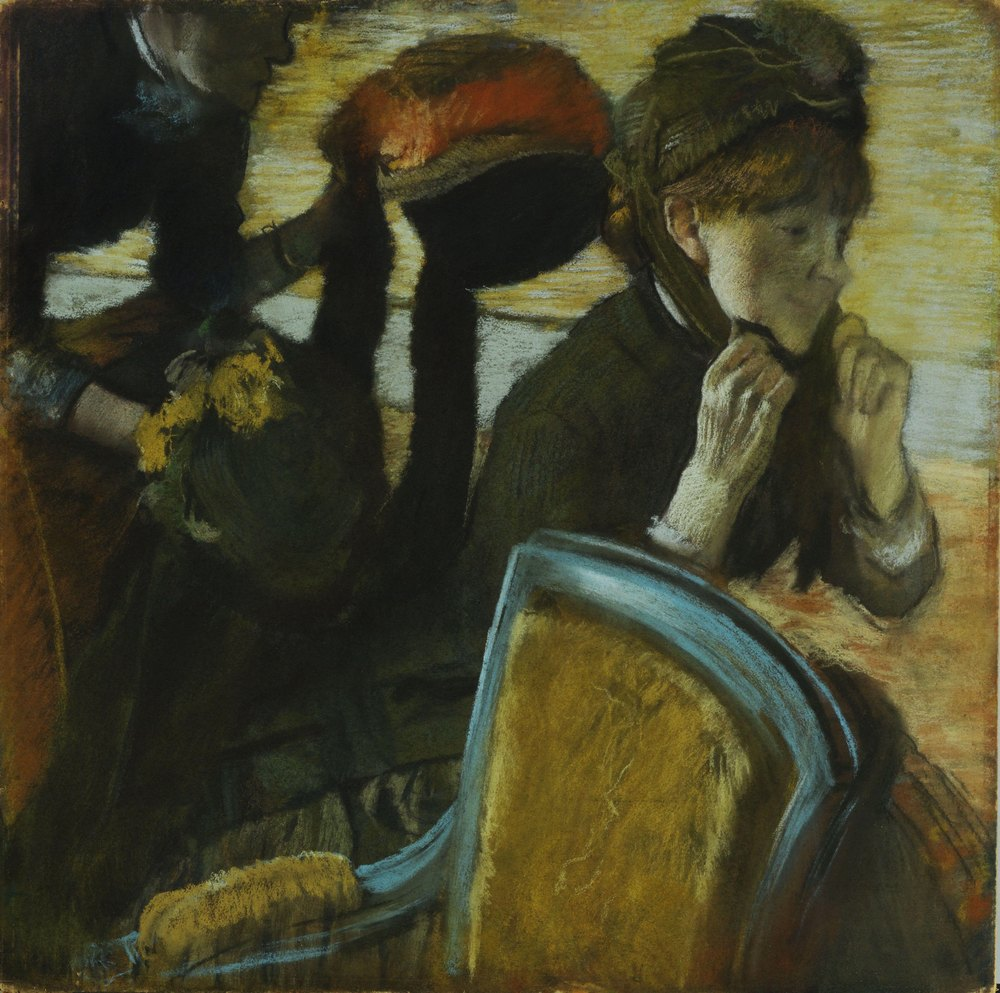

Optima Academy OnlineAn Education Experience Company
Optima Academy OnlineAn Education Experience CompanyUne journée de shopping
Read each paragraph, then press ▶ Écouter and follow along with your eyes. Read it a second time with the audio playing — that pairing of eye and ear is where fluency starts.
- faire du shopping — to go shopping
- chercher — to look for
- pour — for
- une fête — a party
- bleue — blue (f.)
- parfaite — perfect (f.)
- rouge — red
- alors — so / therefore
- adorer — to love / adore
J’adore faire du shopping. Aujourd’hui, je cherche une robe pour une fête.
Je vois une belle robe bleue dans la vitrine. Je l’essaie : la taille est parfaite !
Le pull rouge est très cher, alors je ne l’achète pas. Mais les chaussures ? Je les adore, et je les achète !
The passage is below. In two steps, circle every direct object pronoun (le, la, l', les), then underline the noun each one replaces. Tap the words: the page marks them for you. You should find four pronouns. Notice the negative one — je ne l'achète pas — and how the pronoun still sits right before the verb, inside the ne…pas.
Paris is one of the world's great fashion capitals. In the 1920s, Coco Chanel freed women from the stiff, corseted styles of the past — she used soft jersey fabric and gave the world la petite robe noire, the little black dress that never goes out of style. In 1947, Christian Dior's “New Look” revived French haute couture (high fashion) with sweeping, elegant lines after the hardship of war.
Twice a year, la Semaine de la mode (Paris Fashion Week) still draws designers, buyers, and photographers from every continent. When you learn the vocabulary of la mode, you're stepping into a conversation France has led for a hundred years.
Dans un magasin de Paris (in a Paris shop). Look at the two paintings and answer. Instant feedback — practice, not a grade.


Catherine Dior (1917–2008), the younger sister of the designer Christian Dior, joined the French Resistance in 1941, during the Second World War, when much of France was occupied by Germany. Her work was dangerous: she passed secret reports on to London, and the Resistance met in her brother’s Paris apartment. In July 1944 the Gestapo (the Nazi secret police) arrested her. She was tortured, sent to the Ravensbrück concentration camp and forced to work in other camps and factories. She survived, came home in 1945, and was awarded the Croix de guerre and the Légion d’honneur.
Courage is not the absence of fear: it is doing what is right when it costs you. In 1947 her brother launched his first perfume, Miss Dior; it is often said that he named it after her.
⭐ Extra practice for this part is in Pour aller plus loin, at the end of the lesson.
Write five sentences about a shopping trip
Tell the story of a real or imagined shopping trip. Use at least five clothing/shopping words, at least three direct object pronouns (le, la, l', les), one negative (je ne l'achète pas), and one sentence in the past (je l'ai achetée). This is your rehearsal for both the Speaking Task and Langue en action — write it well and reuse it. Write one sentence in each box; the coach ticks each rule as you write and counts your words and pronouns.
That is the end of today’s lesson. If you have time, these extras give you more practice. Each one goes with a part of the lesson above.
You read a full shopping trip and understood it — every pronoun pointed back to a noun you knew. That's real reading, not decoding. Tomorrow is an assessment day — à demain ! (See you tomorrow!)